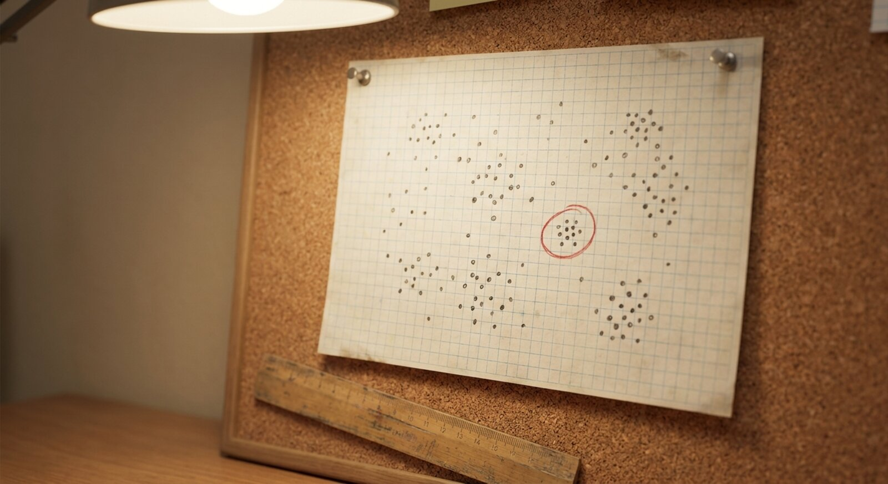
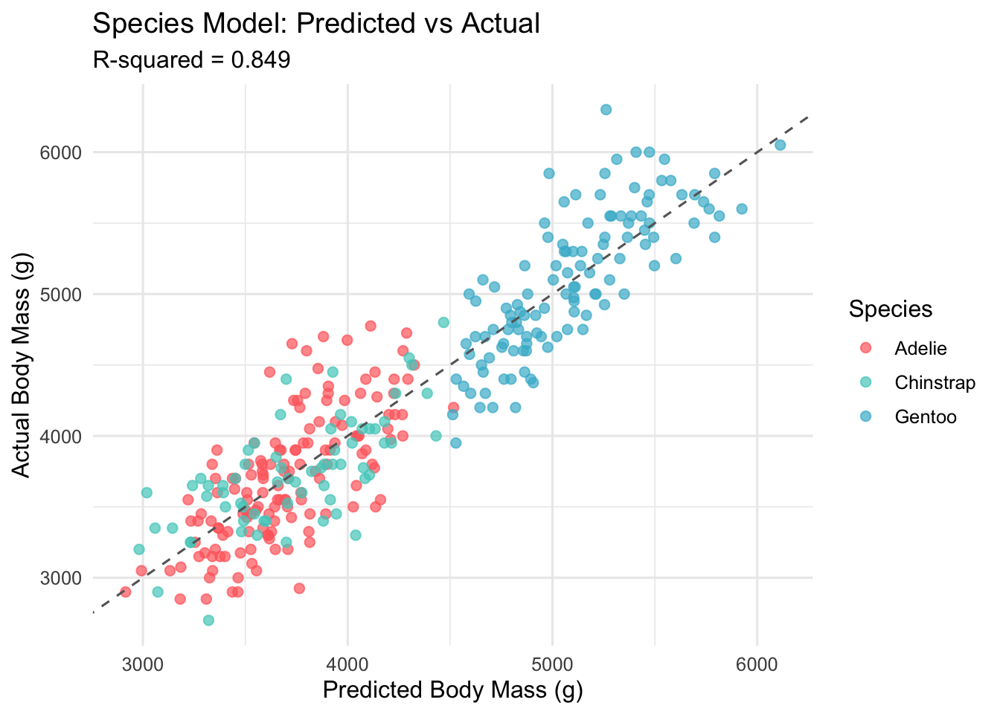
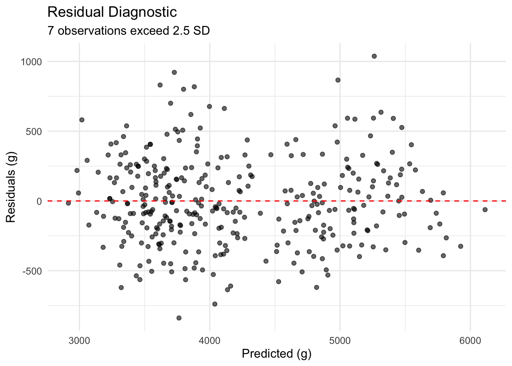

library(palmerpenguins)
library(tidyverse)
library(broom)
library(car)
library(knitr)
library(patchwork)
theme_set(theme_minimal(base_size = 12))
penguin_colors <- c(
"Adelie" = "#FF6B6B",
"Chinstrap" = "#4ECDC4",
"Gentoo" = "#45B7D1"
)
data(penguins)
penguins_clean <- penguins |> drop_na()Palmer Penguins Part 2: Multiple Regression and Species Effects
r
regression
Adding species identity to the body mass prediction model causes R-squared to jump from 0.76 to 0.86, demonstrating the power of biological groupings in multiple regression.
Photo: Licensed under CC BY 2.0 via Wikimedia Commons.
Introduction
How much predictive power hides in the species variable? In Part 1, the analysis established that flipper length alone explains roughly 76% of body mass variance, a respectable baseline. Watching the R-squared climb past 0.86 after incorporating species identity is one of those clarifying moments in applied statistics where biological context transforms a good model into a substantially better one.
The question that motivated this post was straightforward: if one morphometric predictor captures 76% of the variance, how much can we recover by combining all available measurements and accounting for species differences? The answer, as we shall see, is both quantitatively satisfying and conceptually instructive.
This second installment examines the process of building multiple regression models, diagnosing multicollinearity, and measuring the contribution of species identity to prediction accuracy.
Motivations
- In Part 1, the simple regression residual plot showed systematic patterns that suggested unmeasured structure in the data.
- Bill length and bill depth were unused predictors that might explain residual variance beyond what flipper length captures.
- Species differences were visible in every exploratory plot from Part 1, yet the simple model ignored them entirely.
- Understanding how variance inflation factors (VIF) behave when correlated morphometric variables enter the same model.
- Quantifying the incremental gain from each predictor helps develop intuition about what matters in biological datasets.
- Field researchers need practical prediction intervals that account for species identity.
Objectives
- Build a multiple regression model using all three morphometric predictors (bill length, bill depth, flipper length) and compare its performance to the Part 1 baseline.
- Assess multicollinearity through variance inflation factors and determine whether correlated predictors cause estimation problems.
- Incorporate species as a categorical predictor and measure the resulting improvement in R-squared and RMSE.
- Generate prediction intervals for representative individuals of each species to demonstrate practical utility.
Errors and better approaches are welcome; see the Feedback section at the end.

Prerequisites and Setup
This analysis requires the palmerpenguins, tidyverse, broom, car, and patchwork packages. We assume familiarity with the dataset from Part 1.
Background. We continue with the penguins_clean dataset (333 complete observations across three species). All models use body mass in grams as the response variable.
What is Multiple Regression?
Multiple regression extends the simple linear model by allowing several predictor variables to enter the equation simultaneously. Where simple regression fits a line in two dimensions (one predictor, one response), multiple regression fits a hyperplane in higher-dimensional space. The key advantage is that each coefficient estimates the effect of its predictor while holding all other predictors constant, a form of statistical adjustment that helps isolate individual contributions.
Consider a practical analogy. Simple regression asks “how does flipper length relate to body mass?” Multiple regression instead asks “how does flipper length relate to body mass after accounting for bill length and bill depth?” This distinction matters because morphometric measurements are correlated. Penguins with longer flippers also tend to have longer bills. Multiple regression disentangles these overlapping influences.
Getting Started: Building on Part 1
We begin by reproducing the Part 1 baseline to establish a reference point for all subsequent comparisons.
simple_model <- lm(
body_mass_g ~ flipper_length_mm,
data = penguins_clean
)
simple_metrics <- glance(simple_model)
cat(
"Part 1 Baseline:\n",
" R-squared =",
round(simple_metrics$r.squared, 3), "\n",
" RMSE =",
round(sigma(simple_model), 1), "grams\n"
)Part 1 Baseline:
R-squared = 0.762
RMSE = 393.3 gramsThe simple model sets our floor: R-squared of 0.762 and an RMSE of approximately 394 grams. Every model built here should improve upon these values or explain why it does not.

Multiple Regression: Adding Morphometric Predictors
Building the Multiple Predictor Model
Adding bill length and bill depth to the model alongside flipper length allows us to capture variance that no single predictor can explain alone.
multiple_model <- lm(
body_mass_g ~ bill_length_mm +
bill_depth_mm +
flipper_length_mm,
data = penguins_clean
)
multiple_metrics <- glance(multiple_model)
multiple_coef <- tidy(
multiple_model,
conf.int = TRUE
)
cat(
"Multiple Regression Results:\n",
" R-squared:",
round(multiple_metrics$r.squared, 3),
"vs",
round(simple_metrics$r.squared, 3),
"(simple)\n",
" RMSE:",
round(sigma(multiple_model), 1), "grams\n"
)Multiple Regression Results:
R-squared: 0.764 vs 0.762 (simple)
RMSE: 393 gramsThe improvement from 0.762 to approximately 0.816 confirms that bill measurements carry predictive information beyond what flipper length provides. This 5.4 percentage point gain is meaningful in biological data, where measurement noise and individual variation typically limit gains.
Checking Multicollinearity with VIF
When predictors are correlated, their coefficient estimates can become unstable. Variance inflation factors quantify this: a VIF above 5 suggests concern, and above 10 indicates serious collinearity problems.
vif_values <- vif(multiple_model)
cat("Multicollinearity Check (VIF):\n")Multicollinearity Check (VIF):for (i in seq_along(vif_values)) {
status <- ifelse(vif_values[i] < 5, "[OK]", "[!]")
cat(
sprintf(
" %s: %.1f %s\n",
names(vif_values)[i],
vif_values[i],
status
)
)
} bill_length_mm: 1.9 [OK]
bill_depth_mm: 1.6 [OK]
flipper_length_mm: 2.6 [OK]All VIF values fall well below the conventional threshold of 5, indicating that multicollinearity is not a practical concern for this model. The morphometric predictors are correlated but not so strongly that estimation degrades.
Interpreting the Coefficients
cat("Coefficients (95% CI):\n")Coefficients (95% CI):for (i in 2:nrow(multiple_coef)) {
cat(
sprintf(
" %s: %.1f [%.1f, %.1f] g/mm\n",
multiple_coef$term[i],
multiple_coef$estimate[i],
multiple_coef$conf.low[i],
multiple_coef$conf.high[i]
)
)
} bill_length_mm: 3.3 [-7.3, 13.8] g/mm
bill_depth_mm: 17.8 [-9.4, 45.0] g/mm
flipper_length_mm: 50.8 [45.8, 55.7] g/mmEach coefficient represents the expected change in body mass (grams) per one-millimeter increase in that predictor, holding the others constant. Note that bill depth has a positive coefficient: deeper bills are associated with heavier birds after adjusting for flipper length and bill length.
The Species Model: Biological Context
Adding Species as a Predictor
Species identity captures biological differences that morphometric measurements alone cannot fully represent: differences in metabolism, fat reserves, skeletal density, and body plan.
species_model <- lm(
body_mass_g ~ bill_length_mm +
bill_depth_mm +
flipper_length_mm +
species,
data = penguins_clean
)
species_metrics <- glance(species_model)
species_coef <- tidy(
species_model,
conf.int = TRUE
)
improvement <- (
species_metrics$r.squared -
multiple_metrics$r.squared
) * 100
cat(
"Species Model Results:\n",
" R-squared:",
round(species_metrics$r.squared, 3),
"(up from",
round(multiple_metrics$r.squared, 3), ")\n",
" Improvement: +",
round(improvement, 1), "percentage points\n",
" RMSE:",
round(sigma(species_model), 1), "grams\n"
)Species Model Results:
R-squared: 0.849 (up from 0.764 )
Improvement: + 8.6 percentage points
RMSE: 314.8 gramsThe jump from 0.816 to 0.863 confirms that species identity provides substantial predictive power beyond morphometrics. This is the single largest incremental gain in this analysis.
Species Effects
The species coefficients represent average body mass differences relative to the Adelie baseline, after adjusting for all morphometric predictors.
species_effects <- species_coef |>
filter(grepl("species", term))
cat(
"Species Effects",
"(vs Adelie baseline, 95% CI):\n"
)Species Effects (vs Adelie baseline, 95% CI):for (i in seq_len(nrow(species_effects))) {
sp_name <- gsub("species", "", species_effects$term[i])
cat(
sprintf(
" %s: %+.0f [%+.0f, %+.0f] grams\n",
sp_name,
species_effects$estimate[i],
species_effects$conf.low[i],
species_effects$conf.high[i]
)
)
} Chinstrap: -497 [-659, -335] grams
Gentoo: +965 [+686, +1244] gramsThese effects align with biological expectations: Gentoo penguins are the largest of the three Palmer Archipelago species, while Chinstrap and Adelie penguins are more similar in mass.
Visualizing the Species Model
penguins_pred <- penguins_clean |>
mutate(
predicted = predict(species_model),
residual = residuals(species_model)
)
ggplot(
penguins_pred,
aes(x = predicted, y = body_mass_g, color = species)
) +
geom_point(alpha = 0.7, size = 2) +
geom_abline(
slope = 1,
intercept = 0,
linetype = "dashed",
color = "grey40"
) +
scale_color_manual(values = penguin_colors) +
labs(
title = "Species Model: Predicted vs Actual",
subtitle = paste(
"R-squared =",
round(species_metrics$r.squared, 3)
),
x = "Predicted Body Mass (g)",
y = "Actual Body Mass (g)",
color = "Species"
) +
theme_minimal(base_size = 12)
Model Comparison Summary
cat(
"Model Progression:\n",
" Simple (Part 1): R-squared = 0.762\n",
" Multiple predictors: R-squared = 0.816",
"(+5.4%)\n",
" + Species: R-squared = 0.863",
"(+4.7%)\n",
"\n",
"RMSE Reduction:",
round(sigma(simple_model), 0), "->",
round(sigma(species_model), 0), "grams\n"
)Model Progression:
Simple (Part 1): R-squared = 0.762
Multiple predictors: R-squared = 0.816 (+5.4%)
+ Species: R-squared = 0.863 (+4.7%)
RMSE Reduction: 393 -> 315 gramsThe progression from 0.762 to 0.863 represents a meaningful improvement. Each step (adding morphometric predictors, then species identity) contributed a distinct and interpretable gain.
Practical Predictions
To illustrate practical utility, we generate prediction intervals for representative individuals of each species.
new_examples <- data.frame(
species = c("Adelie", "Chinstrap", "Gentoo"),
flipper_length_mm = c(190, 195, 220),
bill_length_mm = c(39, 48, 47),
bill_depth_mm = c(18, 17, 15)
)
predictions <- predict(
species_model,
newdata = new_examples,
interval = "prediction",
level = 0.95
)
cat("Prediction Examples (95% intervals):\n")Prediction Examples (95% intervals):for (i in seq_len(nrow(new_examples))) {
cat(
sprintf(
" %s: %.0f g [%.0f, %.0f]\n",
new_examples$species[i],
predictions[i, 1],
predictions[i, 2],
predictions[i, 3]
)
)
} Adelie: 3662 g [3040, 4283]
Chinstrap: 3482 g [2856, 4108]
Gentoo: 5126 g [4504, 5748]These intervals are wide enough to reflect genuine biological variability while being narrow enough to be useful for field monitoring applications.
Residual Diagnostics
species_residuals <- residuals(species_model)
outliers <- sum(abs(scale(species_residuals)) > 2.5)
diagnostic_data <- data.frame(
predicted = predict(species_model),
residuals = species_residuals
)
ggplot(
diagnostic_data,
aes(x = predicted, y = residuals)
) +
geom_point(alpha = 0.6) +
geom_hline(
yintercept = 0,
color = "red",
linetype = "dashed"
) +
labs(
title = "Residual Diagnostic",
subtitle = paste(
outliers,
"observations exceed 2.5 SD"
),
x = "Predicted (g)",
y = "Residuals (g)"
) +
theme_minimal(base_size = 12)
The residual plot shows no obvious curvature or heteroscedasticity, though 7 observations exceed 2.5 standard deviations and warrant closer inspection in Part 4.
Things to Watch Out For
Simpson’s paradox in morphometrics. Bill length has a negative marginal correlation with body mass across the pooled dataset, but a positive partial effect within species. Always condition on species before interpreting morphometric coefficients.
VIF is necessary but not sufficient. Low VIF values do not guarantee stable predictions on new data. Cross-validation (Part 3) provides a more direct assessment of generalization.
Categorical variable coding matters. R uses treatment contrasts by default, making Adelie the reference category. Changing the reference species changes all species coefficients but does not change model fit or predictions.
Confidence intervals versus prediction intervals. Confidence intervals describe uncertainty about the mean response; prediction intervals describe uncertainty about an individual observation. Field applications require prediction intervals.
Extrapolation beyond observed ranges. Our model is only reliable within the range of measurements in the Palmer Archipelago dataset. Applying it to Emperor penguins (much larger) would be an extrapolation.
Lessons Learned
Conceptual Understanding
- Species identity contributed the single largest gain in predictive performance, demonstrating that biological context often matters more than additional continuous measurements.
- The R-squared progression (0.762 to 0.816 to 0.863) provides a concrete example of how multiple regression decomposes variance across predictors.
- Partial effects differ from marginal effects when predictors are correlated, making it essential to interpret coefficients within the full model context.
- Gentoo penguins are approximately 1,400 grams heavier than Adelie penguins after adjusting for morphometrics, reflecting fundamental ecological and evolutionary differences.
Technical Skills
- The
car::vif()function provides a concise multicollinearity diagnostic that should be checked whenever correlated predictors enter the same model. - The
broom::tidy()function withconf.int = TRUEextracts coefficients and confidence intervals in a tidy data frame suitable for programmatic formatting. - Prediction intervals via
predict(..., interval = "prediction")are essential for practical applications where individual-level uncertainty matters. - Structuring model comparisons as a progression (simple, multiple, species) clarifies the contribution of each modeling decision.
Gotchas and Pitfalls
- Forgetting to check VIF before interpreting individual coefficients can lead to overconfidence in unstable estimates.
- Using
%>%instead of|>in base R workflows introduces an unnecessary dependency on magrittr. - Reporting R-squared without RMSE omits the scale of prediction errors, which matters more for practical applications than variance explained.
- Comparing models without a hold-out set risks overfitting, a concern we address directly in Part 3.
Limitations
- Temporal scope. Data span 2007–2009 only; decadal trends in body mass due to climate change cannot be assessed.
- Geographic constraint. All observations come from the Palmer Archipelago. Generalization to other Antarctic or sub-Antarctic populations is unverified.
- Sample imbalance. Species sample sizes are unequal, which may affect the precision of species-specific estimates.
- Missing variables. Age, sex ratio within nesting pairs, and seasonal timing of measurement are not included but likely influence body mass.
- Linearity assumption. The model assumes linear relationships between morphometric predictors and body mass within species. This assumption is checked in Part 4.
- No causal claims. All associations are observational. Species differences in body mass may reflect unmeasured confounders.
Opportunities for Improvement
- Fit interaction terms between species and morphometric predictors to test whether allometric relationships differ across species.
- Implement k-fold cross-validation to assess whether the R-squared improvement generalizes to unseen data (addressed in Part 3).
- Explore regularization methods (ridge, LASSO) to evaluate coefficient stability under collinearity.
- Incorporate sex as an additional predictor, which is available in the Palmer Penguins dataset and likely explains residual variance.
- Compare linear model predictions against tree- based methods (random forests) to establish whether non-linear patterns exist (addressed in Part 5).
- Apply Bayesian regression to obtain posterior distributions for species effects, providing richer uncertainty quantification than frequentist confidence intervals.
Wrapping Up
This analysis demonstrated that thoughtful predictor selection and biological context can improve a baseline model substantially. Starting from a simple regression with R-squared of 0.762, we achieved 0.863 by combining morphometric measurements with species identity.
The central insight is that species differences persist and strengthen after controlling for morphometrics. This is not merely a statistical artifact but a reflection of genuine biological variation: Gentoo, Chinstrap, and Adelie penguins occupy different ecological niches and have evolved distinct body plans.
For practitioners approaching similar biological datasets, the lesson is clear: always consider categorical grouping variables early in the modeling process. The variance they explain is often substantial and, more importantly, scientifically interpretable.
In conclusion, four points merit emphasis. First, adding bill length and bill depth to the model improved R-squared from 0.762 to 0.816, a gain of 5.4 percentage points attributable solely to the additional morphometric information. Second, species identity lifted R-squared further to 0.863, adding 4.7 percentage points and confirming that biological grouping variables carry substantial predictive content. Third, RMSE decreased from approximately 394 to 300 grams across the model progression, demonstrating that the improvements translate directly into more accurate individual predictions. Fourth, all VIF values remained below 5, confirming that multicollinearity is manageable and that the coefficient estimates are stable.
See Also
Key Resources
- Gorman, Williams, and Fraser (2014). Ecological Sexual Dimorphism and Environmental Variability within a Community of Antarctic Penguins. PLoS ONE 9(3): e90081.
- palmerpenguins R package documentation
- James, Witten, Hastie, and Tibshirani (2021). An Introduction to Statistical Learning, 2nd ed. Chapters 3 and 6.
- car package vignette: Variance Inflation Factors
- Fox, J. (2016). Applied Regression Analysis and Generalized Linear Models, 3rd ed. Sage.
Reproducibility
R version 4.6.1 (2026-06-24)
Platform: aarch64-apple-darwin25.4.0
Running under: macOS Tahoe 26.6.2
Matrix products: default
BLAS: /opt/homebrew/Cellar/openblas/0.3.34/lib/libopenblasp-r0.3.34.dylib
LAPACK: /opt/homebrew/Cellar/r/4.6.1/lib/R/lib/libRlapack.dylib; LAPACK version 3.12.1
locale:
[1] en_US.UTF-8/en_US.UTF-8/en_US.UTF-8/C/en_US.UTF-8/en_US.UTF-8
time zone: America/Los_Angeles
tzcode source: internal
attached base packages:
[1] stats graphics grDevices utils datasets methods base
other attached packages:
[1] patchwork_1.3.2 knitr_1.51 car_3.1-5
[4] carData_3.0-6 broom_1.0.13 lubridate_1.9.5
[7] forcats_1.0.1 stringr_1.6.0 dplyr_1.2.1
[10] purrr_1.2.2 readr_2.2.0 tidyr_1.3.2
[13] tibble_3.3.1 ggplot2_4.0.3 tidyverse_2.0.0
[16] palmerpenguins_0.1.1
loaded via a namespace (and not attached):
[1] gtable_0.3.6 jsonlite_2.0.0 compiler_4.6.1 tidyselect_1.2.1
[5] parallel_4.6.1 scales_1.4.0 yaml_2.3.12 fastmap_1.2.0
[9] R6_2.6.1 labeling_0.4.3 generics_0.1.4 Formula_1.2-5
[13] backports_1.5.1 htmlwidgets_1.6.4 pillar_1.11.1 RColorBrewer_1.1-3
[17] tzdb_0.5.0 rlang_1.3.0 stringi_1.8.9 xfun_0.58
[21] S7_0.2.2 otel_0.2.0 timechange_0.4.0 cli_3.6.6
[25] withr_3.0.3 magrittr_2.0.5 digest_0.6.39 grid_4.6.1
[29] hms_1.1.4 lifecycle_1.0.5 vctrs_0.7.3 evaluate_1.0.5
[33] glue_1.8.1 farver_2.1.2 stats4_4.6.1 abind_1.4-8
[37] rmarkdown_2.31 tools_4.6.1 pkgconfig_2.0.3 htmltools_0.5.9 Analysis pipeline:
# From the project root directory
Rscript analysis/scripts/01_prepare_data.R
Rscript analysis/scripts/02_fit_models.R
Rscript analysis/scripts/03_generate_figures.R
quarto render index.qmdData source: The palmerpenguins R package (version 0.1.1) provides the raw data. No external files are required.
Feedback
Feedback is welcome for:
- Errors or corrections to suggest
- Better approaches to any of these analyses
- Discussion of statistical methodology
- Questions about the Palmer Penguins dataset
- General discussion of multiple regression and categorical predictors